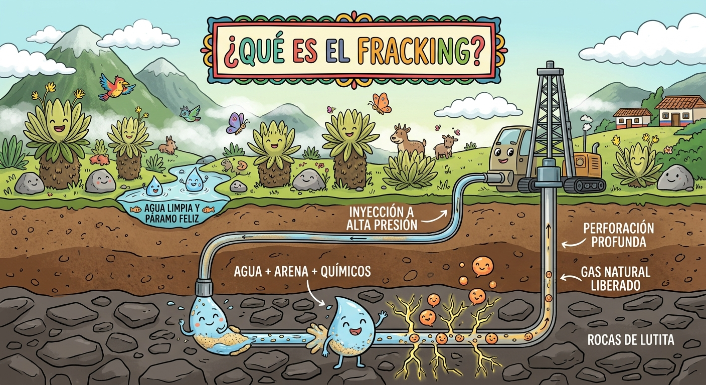
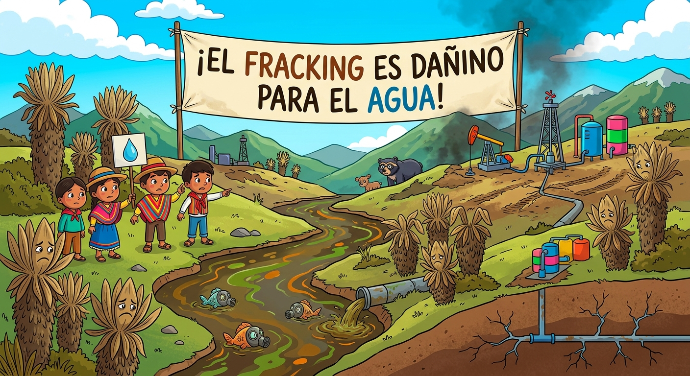

El fracking o fracturación hidráulica es una técnica no convencional para extraer gas o petróleo atrapado en rocas profundas
Consiste en perforar el subsuelo e inyectar a alta presión millones de litros de agua dulce mezclada con arena y químicos
Esta fuerza rompe la roca subterránea permitiendo que los hidrocarburos fluyan hacia la superficie para su recolección
Sin embargo, este método genera serios riesgos como la contaminación de acuíferos subterráneos con sustancias tóxicas
Por ello, en ecosistemas frágiles como los páramos, su impacto se considera devastador e irreversible para el agua
Proceso técnico de perforación e inyección hidráulica en rocas profundas.

⚙️ Pasos del Proceso Técnico
1. Perforación profunda: Se abren pozos verticales y horizontales a miles de metros en el subsuelo
2. Inyección a presión: Se bombea agua con arena y más de 600 químicos tóxicos a presiones extremas
3. Fracturación de la roca: La presión agrieta las capas de roca dura liberando el gas o petróleo
4. Retorno de fluido: Regresa agua de retorno cargada de metales pesados y sustancias radiactivas del subsuelo
⚖️ Pros y Contras del Fracking
PROS (Argumentos de la industria):
Permite extraer hidrocarburos en zonas donde antes era imposible
Genera beneficios económicos a muy corto plazo
CONTRAS (Afectaciones ambientales):
Contamina de forma permanente fuentes hídricas subterráneas
Destruye frailejones y la biodiversidad propia de los páramos
Provoca riesgos de sismicidad inducida y gases de efecto invernadero
💡 Datos Clave sobre el Fracking y el Agua
Más de 600 químicos: En la inyección se emplean cientos de sustancias químicas, de las cuales el 73 % tienen efectos comprobados sobre la salud humana.
Suministro de agua en riesgo: Los páramos abastecen de agua potable a más del 70 % de la población colombiana.
Riesgo de contaminación permanente: Si los acuíferos subterráneos se contaminan con sustancias químicas o metales pesados, el daño a las fuentes hídricas es prácticamente irreversible.

"El agua y los páramos son bienes comunes insustituibles; el fracking y la conservación del recurso hídrico no pueden coexistir"